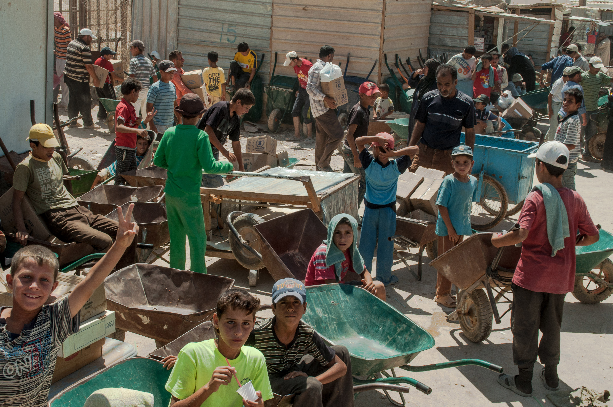
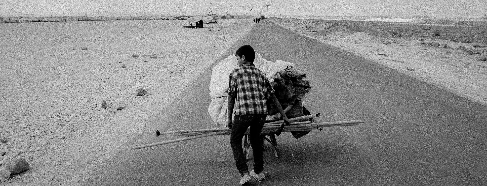
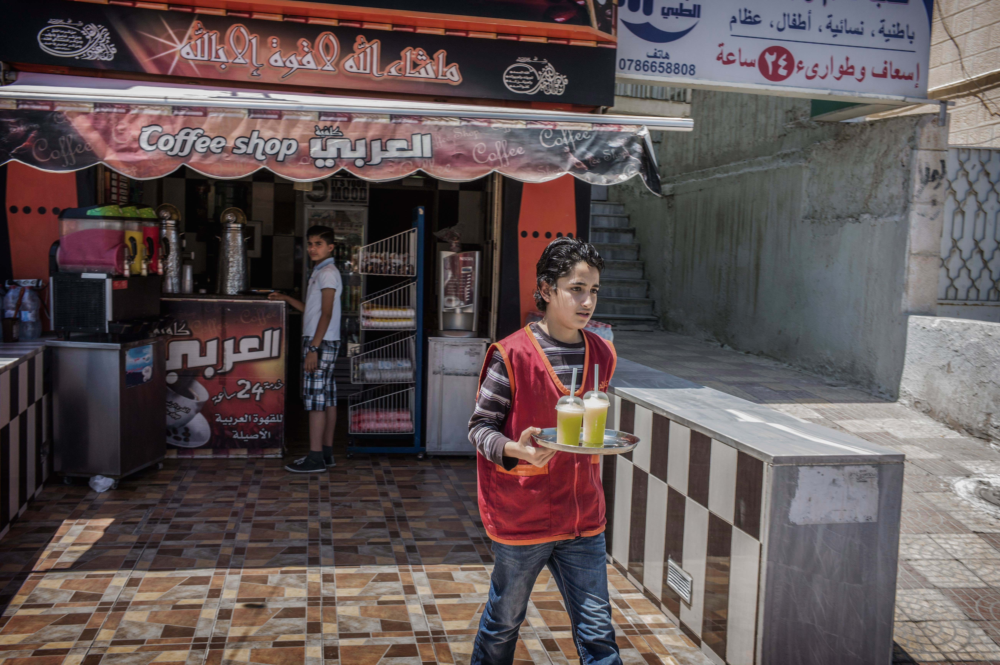
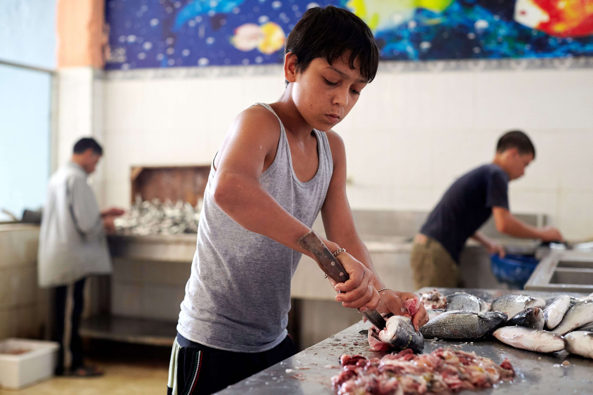

CHILDREN
AT WORK
Mustafa, 15, lives with his younger sister and his aunt and uncle in Zarqa, Jordan. His uncle was tortured in Syria, and he now finds it difficult to work as he cannot stand for more than a few minutes. Mustafa has become the family’s breadwinner and works every day in a shoe store for $US7 a day. He is proud of his role providing for his family but it is also a crushing burden for a child.
Children like Mustafa, some as young as seven, must work long hours with little pay and in some cases, in dangerous conditions. In such circumstances, they are also forfeiting their future by missing out on an education. The majority of working children are boys, although some girls are employed, mostly in agriculture and domestic work.


All work and no play
UNHCR/G.BealsThis is a common scene, children as young as seven years old lining up in the hopes of finding work in Za’atari refugee camp, Jordan.
A widespread problem
Child labour has reached critical levels. According to UNICEF, an estimated one in ten Syrian refugee children in the region is engaged in child labour.10 UNHCR and partners said it is one of the most widespread and complex of all child protection problems.
In Jordan, a recent assessment covering 11 governorates11 found that 47 per cent of 186 households with one or more working family member relied partly or entirely on the income generated by a child.12 A UNICEF/Save the Children assessment in the Jordan Valley, conducted in April 2013, found that out of 3,500 school-aged children, 1,700 were working.13

A helping hand
UNHCR/G.BealsEvery day new families arrive in Za’atari camp. Often exhausted from the long journey, they rely on the kindness of others to help set up their tent. This young boy volunteered to transport a tent for a newly arrived family.
The prevalence of child labour is likely to be even higher than reported numbers suggest. Many children work intermittently, picking up short-term jobs that may change from day to day. It is difficult to identify working children in both urban and rural contexts because refugee populations are often dispersed.
Given that child labour is illegal in both Jordan and Lebanon14, employers and refugee families are likely to hide the problem, fearing the ramifications of being identified. Further, some parents fear that if humanitarian organizations discover their children working, it might undermine their eligibility for financial assistance.
According to UNHCR’s Killian Kleinschmidt in Za’atari camp, “There are around 680 shops in Za’atari - all of them employ children.”  Manal Eid, Programme Development Manager with War Child Holland in Lebanon said that “If you go on the street, you Syrian children working everywhere.”
Manal Eid, Programme Development Manager with War Child Holland in Lebanon said that “If you go on the street, you Syrian children working everywhere.”
A bigger issue for boys
UNHCR and partner staff throughout Lebanon and Jordan said that boys are the most engaged in child labour, undertaking a wide range of jobs. Of the 59 working Syrian refugee children interviewed, 97 per cent were boys. Of these, 43 per cent worked in services, such as in electrical shops, woodwork, rock quarries, motor shops, barber shops, and restaurants. Thirty-nine per cent worked in retail, including clothing shops, shoe shops, sweet shops, supermarkets, and street stands. A smaller number worked in construction and agriculture.
During field research, only two girls were found working—one in a vegetable store and the other as a hairdressing assistant. However, UNHCR and partner staff said that a number of Syrian refugee girls also work, mostly in agriculture, domestic work or child care. The findings of a recent inter-agency suggest that up to 80 per cent of Syrian refugee girls working in Jordan are employed in these two sectors.15

Paying the rent
UNHCR/O.Laban-MatteiBassam’s family relies on his income working in a café in Amman, Jordan to pay the rent for their modest apartment. His mother and brother are both in a bad way, struggling with health issues, and mourning the death of his brother, Bassel, who died when a rocket hit their neighbourhood in Damascus. Although his mother receives financial assistance, the income Bassam brings home is still essential to making ends meet.
Hard work, tough conditions
In addition to working long hours for little pay, many children work in hazardous or demeaning environments. Dangerous forms of child labour are more prevalent in urban and rural areas, since work inside camps is limited to certain jobs.
Boys working in construction and rock quarries use dangerous machinery and lift heavy items. Children employed in agriculture are exposed to pesticides, harsh sun and heavy machinery. For those selling items or begging through car windows at intersections on busy streets, the risk of accidents is high. During interviews, three boys in Lebanon, aged 10, 11 and 13, reported being injured at work. One was burned by hot oil at a restaurant; one cut his hand while fixing a car mirror; and another was beaten by the son of his boss.
Ayman
Tyre, Lebanon
Ayman, a 15 year-old boy in Tyre, Lebanon, wants to be a doctor when he grows up.
But for the moment, his reality is very different. He lives with his parents, aunt, grandparents and two younger siblings. His father cannot find a job. Ayman is the only family member working, selling gum on the street. He makes $US4 a day.
He said his job was “very difficult” and that he was harassed for being Syrian. A man even kicked him for selling gum during Ramadan. He would prefer to be in school, but it was Ayman himself who decided to work to support the family.
Ayman proudly looks after his younger siblings, and his face lit up when he described how he saved up enough to buy his five year-old sister a new dress for Eid al Fitr.
But there are few sources of happiness in Ayman’s own life. He has no friends and is embarrassed by his work, so has not tried to socialize with other boys in the building. When asked about his hopes for the future, Ayman said that he wants his father to find work so that he can go to school.

No other way
UNHCR/S.BaldwinMahmoud, 15, hasn’t been to school for nearly three years. Back in Syria, his parents were worried about the violence in their neighbourhood, so he missed school. Today, his salary of US$60 a month from a Lebanese fish factory helps to pay the rent for the underground storage room his family lives in. The family says they cannot afford the luxury of sending Mahmoud to school.
Little money, little choice
Child labour is directly linked to the basic survival of refugee families. Many Syrian families fled with only what they could carry—a change of clothes; precious documents or photos; and for some, a baby or toddler who could not walk long distances through fields or across borders.
The savings, assets and possessions of most Syrian refugees were lost or destroyed. Their sources of livelihood came to an abrupt end: their lives were essentially frozen.
Assessments on child labour, conducted both within Syria and in host countries, indicate that the primary reason children work is to support their families.16 An inter-agency rapid needs assessment conducted in Lebanon in early 2013, found that the money earned by Syrian refugee children was predominantly used to pay for rent and food.17
Some families do receive financial assistance from UNHCR but resources are severely stretched. Assistance only reaches the most vulnerable, and is not always sufficient to cover all their needs. Many refugee families in both Jordan and Lebanon have no alternative but to send their children to seek work.
-2.jpg)
Searching
UNHCR/G.BealsA young boy looking for work in the Za’atri refugee camp, Jordan.
Parents cannot work
Some parents or caregivers face physical barriers to working, such as those who are elderly, have serious disabilities or have been injured during the war. For refugee children caught in this situation, they are often the only ones able to generate an income. UNHCR prioritizes such situations for financial assistance.
Even when accompanied by their families, many refugee children still need to work. Their parents or caregivers can face legal and social barriers to taking on employment themselves.
During interviews and focus group discussions, parents and children said it is easier for a child to find work and the ramifications of being caught are less severe. One mother in Zarqa, Jordan, explained why her son works while her husband does not: “A boy can take the abuse and insults, a man can’t. So the men stay at home and the children work.”
However, most parents whose children were working made it clear that they did not take the situation lightly. UNHCR and partner staff said that Syrian refugee children often work of their own volition to help their families, not because they are necessarily forced by their parents to do so.
A cultural matter
For some Syrian refugee families, particularly from rural parts of Syria, it is part of their culture for children to start working at a young age. According to a 2012 assessment conducted in Syria by the International Labour Organization (ILO), 18 per cent of children between 10 and 17 years old were working.18 However, most of the children interviewed during field research only started working since becoming refugees, with several UNHCR and partner staff also noting this as the general trend.
In some female-headed households, mothers felt they could not work because it is considered culturally unacceptable, so they asked their sons to work instead. The ILO assessment from 2012 similarly concluded that one reason behind the acceptance of child labour was that it allowed mothers to avoid working in the absence of a working father.19
Naser
Mount Lebanon
Naser, a father of five in Mount Lebanon, was ashamed to admit that he could not find a stable job and that his 13 year-old son worked from 7am to 9pm each day, making accessories for handbags. Naser used to drive a tractor in Syria, but could only find temporary construction work in Lebanon. He brought US$2,000 in savings when he fled, but this did not last long.
Naser proudly noted that his son’s school certificates were among the few items he brought with him to Lebanon. His son was at the top of his class, and could even speak a little English. He said that he wished, ”from the bottom of my heart”, that his son could go to school. But with a family of seven to provide for, there was simply no choice.
Children paying the price
An enormous burden is placed on the shoulders of working boys and girls. Their childhood worries are often replaced with adult concerns. A senior social worker with Caritas, Mount Lebanon, oversees a team of five social workers, who together have worked with over 900 families since the beginning of 2013. She said that when children work, it can lead to stress, causing them to “grow up faster than other children.”
They can also become aggressive towards their parents, she said because they feel entitled to act in this way because they were now providing for their family.
Growing up too fast
Jeb Jannine, Lebanon
A group of 12-16 year old boys in Jeb Jannine, Lebanon, were asked what they would like if they could change one thing in life. Their answers tended to be rooted in financial concerns. One wanted money to pay rent, since this would make his life entirely different. Another said that getting a job was his most important concern. All the boys agreed that their number one desire is to go home.
One 12 year-old boy working in carpentry said he wanted "a different job, any job." His issue was not the nature of the job, nor the conditions of his work, but the simple fact that he did not earn enough to pay his family’s rent.
Many working boys accept their fate as providers for their families. A 14 year-old boy in Jeb Jannine, Lebanon, said that his 12 year-old brother goes to school while he works in a rock quarry. He described the situation as "a matter of circumstance and luck."
Wrong side of the law
According to Shadi, 16, who lives in Irbid, Jordan, “At any moment a Jordanian police car can pick you up, and throw you in Za’atari or jail.”
Child labour is illegal in both Jordan and Lebanon, and their concern at running afoul of the law was a major concern raised by working boys during focus group discussions in both countries. During individual interviews, two boys in Jordan reported that they had previously been arrested and held for over five hours. One had been working in a cafeteria, the other in a motor shop.
UNHCR’s Killian Kleinschmidt, said that his main concern with regard to child labour in Za’atari camp is that boys could slip into the world of smuggling where they can be used as decoys, distracting the police, for example, while adults smuggle goods out of the camp. Trenches have recently been dug to prevent vehicles from getting in and out of the camp, but smugglers are trying to use children to fill them in.
No other choice
UNHCR/S. BaldwinAmar wipes the grease and sweat off of his arm after finishing work as a mechanics assistant. Although Amar wants to go to school he is forced to work in the automotive repair shop to support his family, who arrived in Lebanon with nothing more than the clothes on their backs after their home was destroyed in a rocket attack.
Helping to meet financial needs
UNHCR provides vulnerable Syrian refugee families with financial assistance to help cover urgent and basic needs, including medical expenses and rent. This can prevent families from resorting to negative coping strategies, such as taking their children out of school to work.
In Jordan, UNICEF and its partners are working to withdraw 1,700 children from the labour force and help them to enter the education system, by providing cash assistance to their families to compensate for lost income.

No other choice
UNHCR/J.KohlerA UNHCR staff member smiles at a new Syrian refugee baby at an urban help desk run by UNHCR staff and volunteers in the Jordanian city of Zarqa. With approximately 75% of Jordan’s refugee population living in urban settings, help desks like this one provide critical information and services to refugees in areas of protection, health, and registration.
The vital role of case management
Individual case management is a core aspect of the child protection response in both Lebanon and Jordan. UN agencies and their partners have established functioning referral systems throughout both countries to identify children who face protection risks, manage their cases, and refer them to appropriate services.20
Case managers and social workers visit refugees in their homes to assess their needs. In addition to providing social counselling and emotional support, they develop an action plan with families to promote their children’s safety and help to ensure that they can attend school or take part in other educational services. Where possible, they work together to remove children from the work force, or at least minimize the negative effects of working. In serious cases of violence, abuse or neglect, national authorities become involved.
Case managers and social workers emphasize to parents the importance of education, the potentially harmful effects of child labour, and the impact that domestic violence has on children. Given the pressing financial needs of many families, it is often not possible to find a way for children to stop working. In such situations, case managers also interact directly with children’s employers to minimize the risks they face in the workplace. This can include providing materials to improve their safety at work, and negotiating with employers to ensure they can access at least informal education alongside work.
Where necessary, case managers and social workers refer children to UNHCR and partners for specialized services such as health care, psychosocial support, or legal advice. In certain cases, they might also help families to access financial assistance, or provide in-kind donations from private donors such as clothing or toys. Case managers and social workers follow up regularly with children and their families, and monitor implementation of the action plan.
Old hand
UNHCR/S.BaldwinLoula el Hamoud was one of the first Syrians to arrive in Chekka, Lebanon in 2012. Since then she has taken it upon herself to welcome and help new families. She now works as a UNHCR volunteer, helping direct refugee families to registration and assistance.
Volunteers
Syrian refugees in Jordan and Lebanon can work as volunteers through UNHCR, partners, and local organizations to spread information among the refugee community about issues facing children, raise awareness about available services, provide a support network, and identify and refer children in need of help to UNHCR and partners.
In Jordan, more than 950 Syrian refugees and Jordanians volunteer on 99 child protection committees: 53 in camps, and 46 in host communities. These men and women have reached out to more than 17,000 Syrian refugees. In Lebanon, UNHCR is working to increase the number of refugee outreach workers deployed throughout the country from 106 to 200, the majority of whom will be women.
10 UNICEF, No Lost Generation, October 2013 (publication pending).
11 Ajloun, Amman, Aqaba, Balqa, Irbid, Jarash, Karak, Madaba, Ma’an, Mafraq, and Zarqa
12 UN Women Inter-Agency Assessment, Gender-Based Violence and Child Protection Among Syrian Refugees in Jordan, With a Focus on Early Marriage, Jordan, July 2013, p. 35
13 Save the Children Jordan and UNICEF, Comprehensive Outreach to Syrians in Ghor and Irbid on Educational Needs, Jordan, April 2013.
14 Jordanian law requires children to be in school until age 16; this is also the legal age for employment. In Lebanon, the legal age for compulsory education is 15, while the minimum legal age for employment is 13, instead of 15 years as required by International Labour Organization Minimum Age Convention, which has been ratified by Lebanon (Law of 23 September 1946, Labour Code, article 22).
15 UN Women Inter-Agency Assessment, Gender-Based Violence and Child Protection Among Syrian Refugees in Jordan, With a Focus on Early Marriage, Jordan, July 2013, p.37.
16 International Labour Organization, National Study on Worst Forms of Child Labour in Syria, March 2012, available at: http://www.ilo.org/public/english/region/arpro/beirut/downloads/publ/clsyria.pdf; Child Protection in Emergencies Working Group, Child Protection in Emergencies Rapid Needs Assessment, Lebanon, Jan-Feb 2013; UN Women Inter-Agency Assessment, Gender-Based Violence and Child Protection Among Syrian Refugees in Jordan, With a Focus on Early Marriage, Jordan, July 2013.
17 Child Protection in Emergencies Working Group, Child Protection in Emergencies Rapid Needs Assessment, Lebanon, Jan-Feb 2013, p. 16
18 International Labour Organization, National Study on Worst Forms of Child Labour in Syria, March 2012, p.20.
19 Ibid. p. 107
20 In Jordan, UNHCR and Save the Children International launched national Standard Operating Procedures on Child Protection and Gender-Based Violence on 17 July 2013, which strive to ensure that the prevention and response mechanisms of various child protection actors are coordinated and harmonized. These Procedures also link the emergency child protection case management system to the existing national social welfare system.
"There can be no keener revelation of a society's soul than the way in which it treats its children."
~ Nelson Mandela ~
It's all of our responsibility to protect the children of Syria, to tell their stories, and raise awareness about their plight, until they can go home. Please consider donating (or supporting), connecting, and sharing.